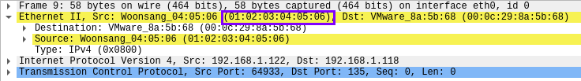

--spoof-mac
MAC address spoofing
This option help when the firewall has a MAC filtering option that accept packets only from specific MAC addresses
Syntax:
nmap -sS -p 135 -Pn -n --disable-arp-ping 192.168.1.118 --spoof-mac 01:02:03:04:05:06
